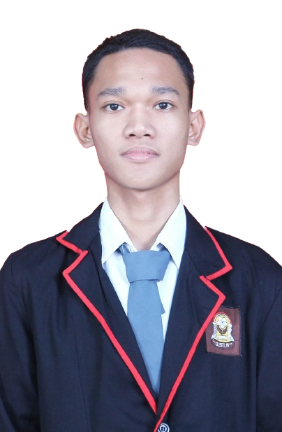

Tentang Saya
Saya Muhammad Faturrahman adalah seseorang yang tertarik dengan bidang cyber security (terutama bermain CTF) dan Pentest(Penetration testing), saya juga adalah orang yang sangat suka belajar. Hal ini Terlihat ketika saya mendalami bidang informatika pada salah satu olimpiade sains nasional semasa saya bersekolah yang menjadikan saya pribadi bersemangat, mandiri, dan tekun dalam belajar.